계단식 무덤, 돌로만 이루어짐 백제 계단식 돌무지무덤과 다른 점 : 봉분 없음 호석 : 무덤을 지지해주는 돌 대표 고분 : 장군총
굴로 들어가면 돌로된 방이 나오는 구조 모줄임 천장 방식을 많이 사용 겉모양은 무덤마다 다름 다양한 벽화가 그려져 있음 대표 고분 : 강서 대묘
-
수렵도
-
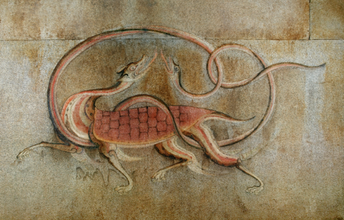
사신도
-
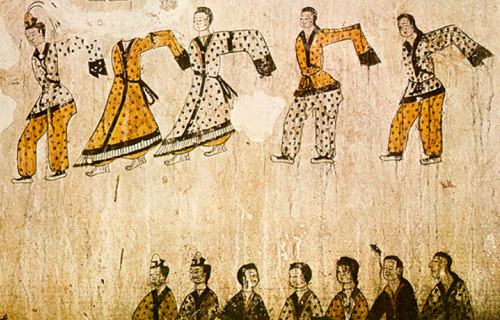
무용도
-
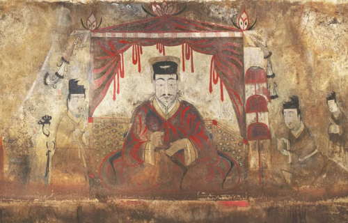
묘주도
-
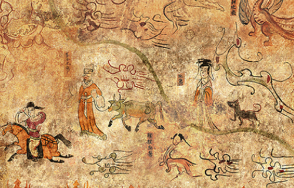
견우직녀도
-
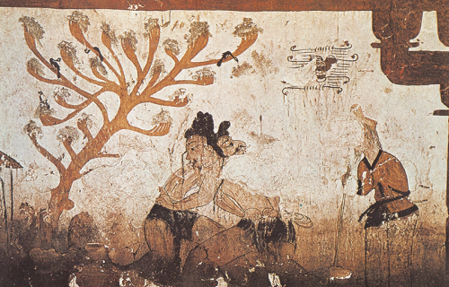
씨름도

고구려의 돌무지무덤과 모양이 비슷함 백제 건국 세력이 고구려 계통임을 보여줌 3계단 위에 봉분 : 고구려와 다른점 대표 고분 : 석촌동 고분
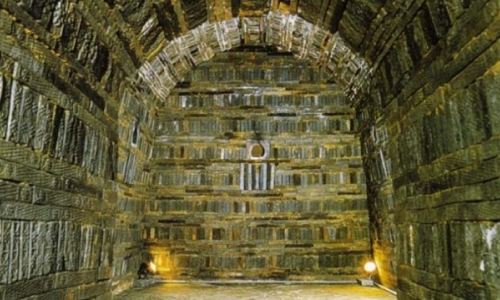
벽돌을 쌓아서 만든 무덤 중국 남조의 영향을 받음 천장은 돔 및 아치형 구조 대표 고분 : 무령왕릉
-

금제 관식
-
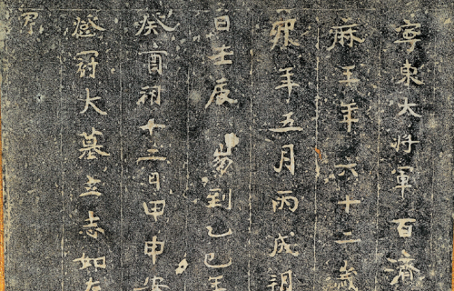
지석(고인의 인적 사항)
-
석수(악귀를 쫓아내기 위함)

규모는 작지만 세련된 형태 중국 남조의 영향을 받음 대표 고분 : 능산리 고분군
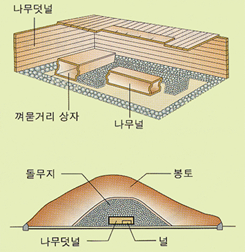

나무 덧널 위에 돌을 쌓고 그 위를 흙으로 덮음 도굴이 어려워 껴묻거리(부장품)가 많이 출토됨 대표 고분 : 천마총, 황남대총, 금관총

무덤 주위에 12지 신상을 두름 대표 고분 : 김유신묘
-
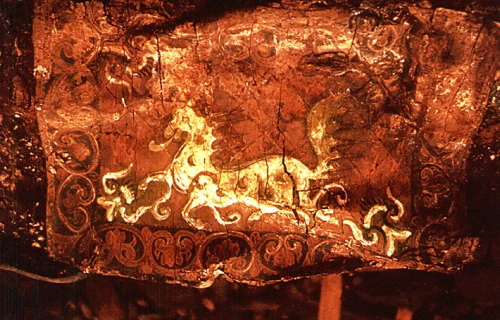
천마도
-
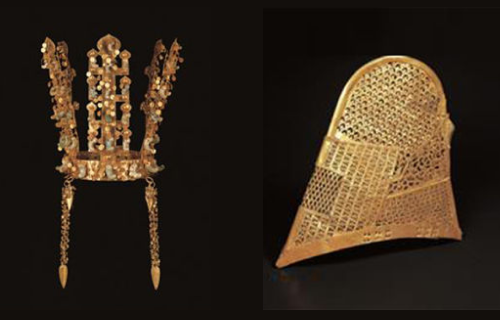
금관 · 관모
-

금제 관식
-

자루 솥
-
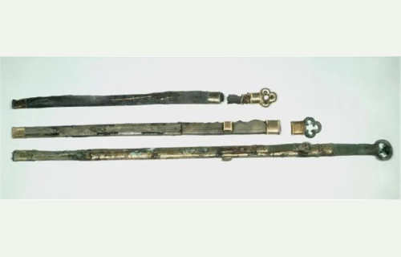
환두대도